| 日付 | 2015年3月8日（日） |
|---|---|
| メンバー | 家族（妻、長女・4歳、長男・1歳） |
| アクセス | 車 |
家族全員が次々と胃腸炎になり、ようやく全員が回復した。
久々に外出したいが生憎天気は悪く、山に行くのは無理そうだ。
息子がいろいろな物の違いを認識できるようになってきたので、動物園に行ってみることにする。
動物園の入口はまずトンネルから始まる。中々斬新なつくりだ。

トンネルを抜けると、まずはペリカンとサイがお出迎え。
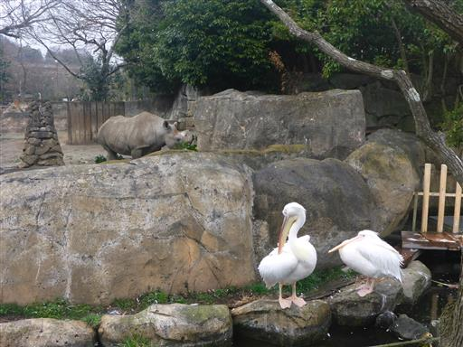
オカピ。思った以上に舌が長い。
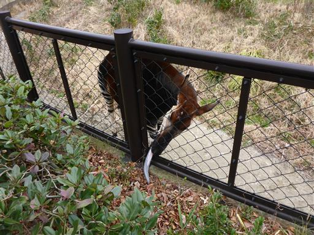
この動物園はコアラが有名。しかしみんな眠っている。
コアラは1日18～20時間を眠って過ごすため、起きている姿はなかなかお目に掛かれない。
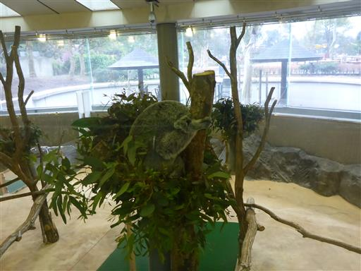
コアラの主食であるユーカリの木が植えられている。
こんな姿の木とは知らなかった。
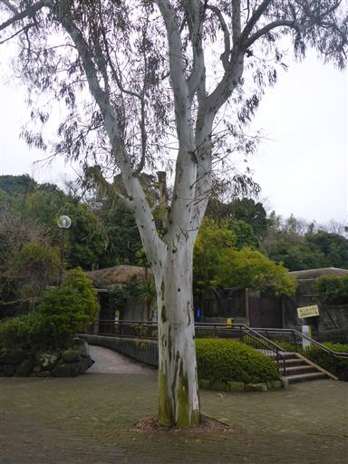
朝からずっと小雨が降っている。
天気が悪いからか、そもそも人気がないのか、人の姿はまばらだ。
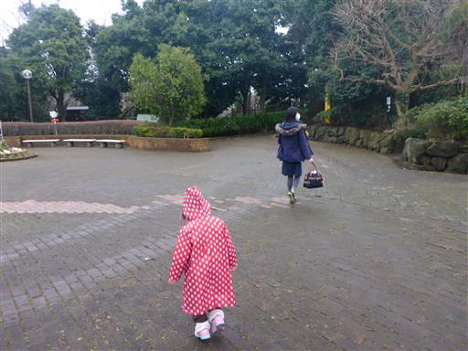
サル。枝にぶら下がって揺れるところを見せてくれた。
非常にサービス精神が良いサルだ。
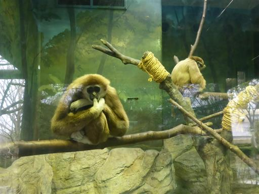
息子は一応キリンやゾウを認識はしているようだが、
始めて見る本物を目の前にしても、反応は薄い。
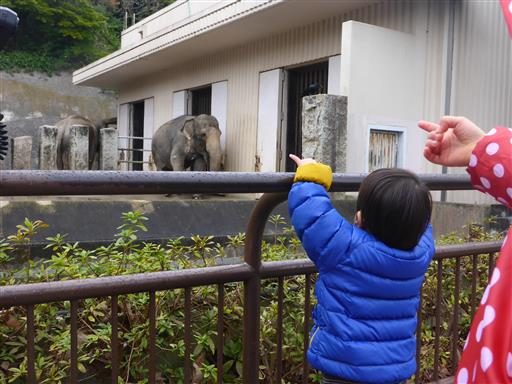
ここのゾウは牙が非常に大きい。
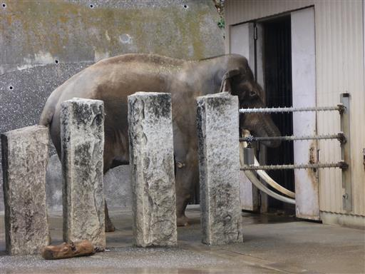
小雨が降って寒いので、休憩所で持参したおにぎりを食べる。
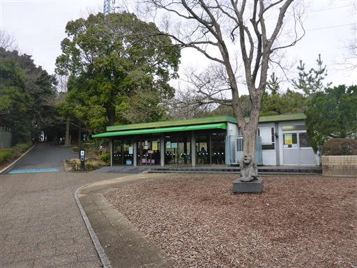
動物と触れ合えるコーナー。ヤギやヒツジ、ブタがいる。
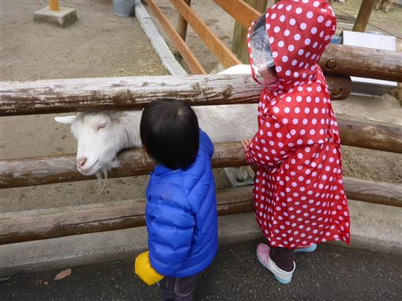
不気味なオブジェが置かれている。
誰が何を考えて置いたのか分からないが、趣味が悪い。
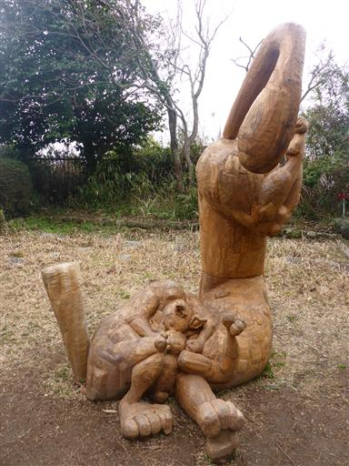
展望台。金沢文庫駅方面が見渡せる。
園内を一通り回ったので、再びコアラを見に行く。
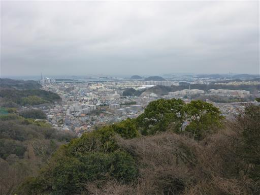
13:30～はユーカリの葉の交換時間。
さすがにこの時間はコアラも目を覚ます。動いているコアラはやっぱり可愛い。
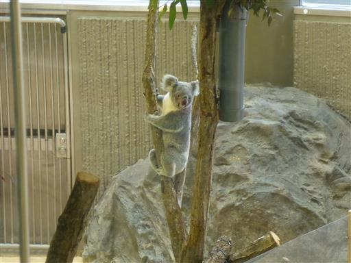
人の少ない園内だが、この時間は人が大勢集まってくる。
起きているコアラを見学したら、動物園を後にする。
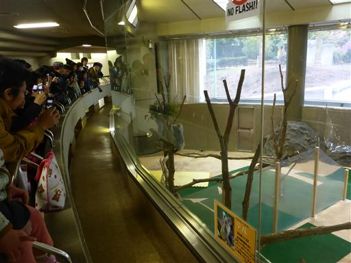
動物園を出た場所に、菜の花畑が広がっている。
辺りは菜の花の強い香りが漂っている。
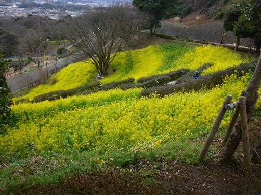
そこそこ長いローラーすべり台がある。しゃがんで滑ると結構スピードが出る。
ほとんど待たずに滑れるのがありがたい。
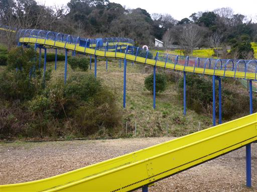
遊具を使ってすべり台の上に登ることができる。
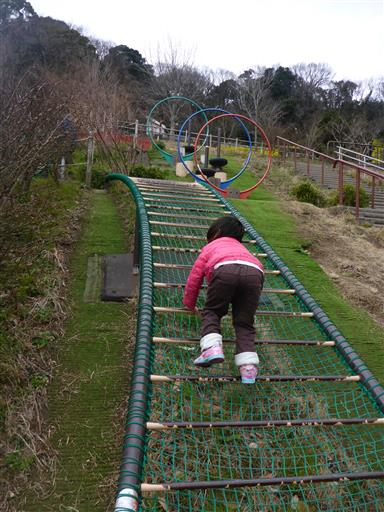
子供と一緒に色々な遊具を楽しむが、さすがにこれは大人には無理だ。
天気は良くなかったが、コアラを見たり、遊具で遊んだりと、なかなか楽しめる動物園だった。
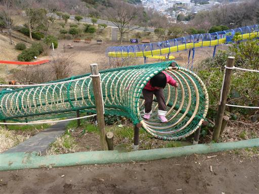